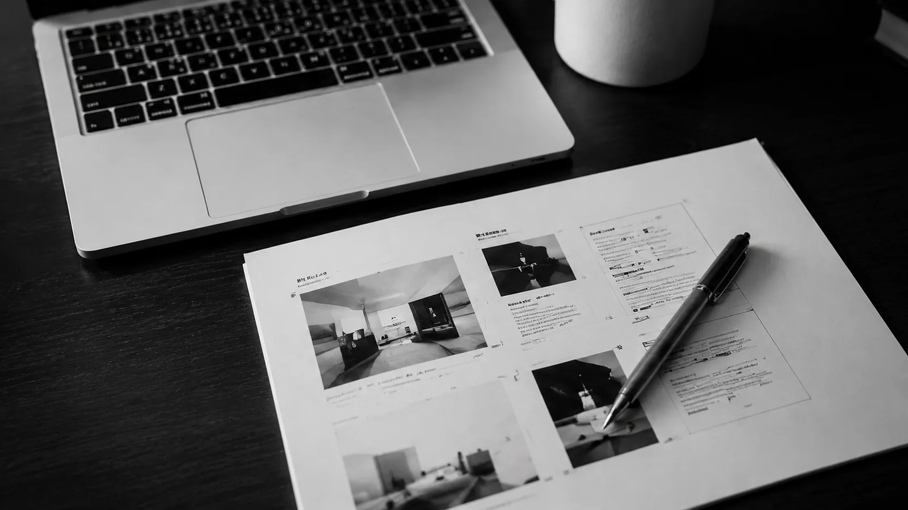
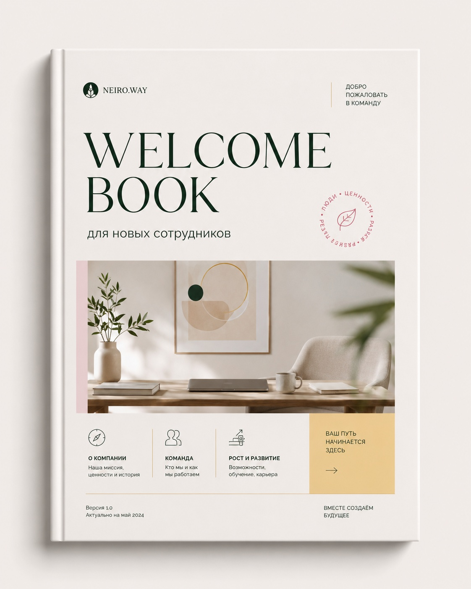
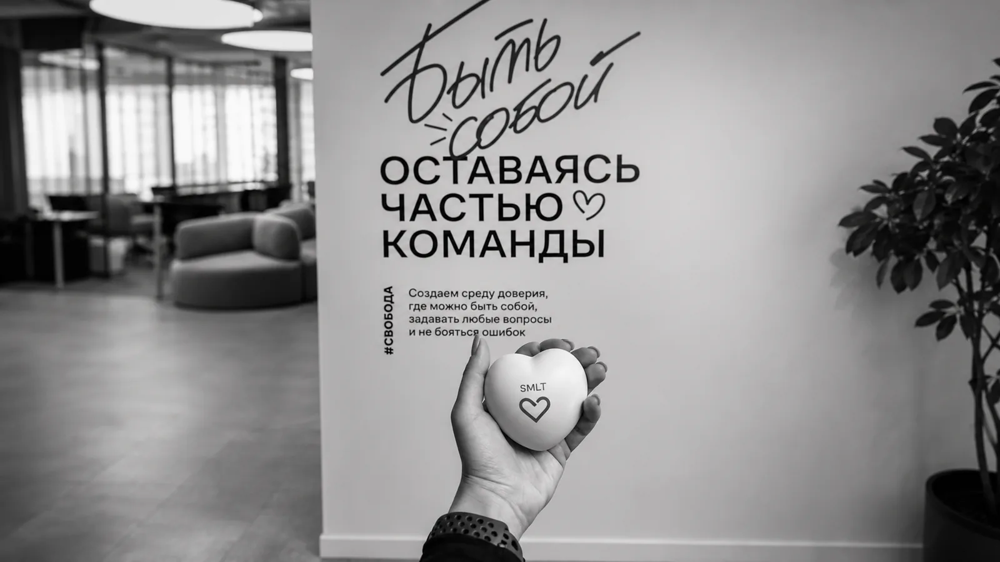
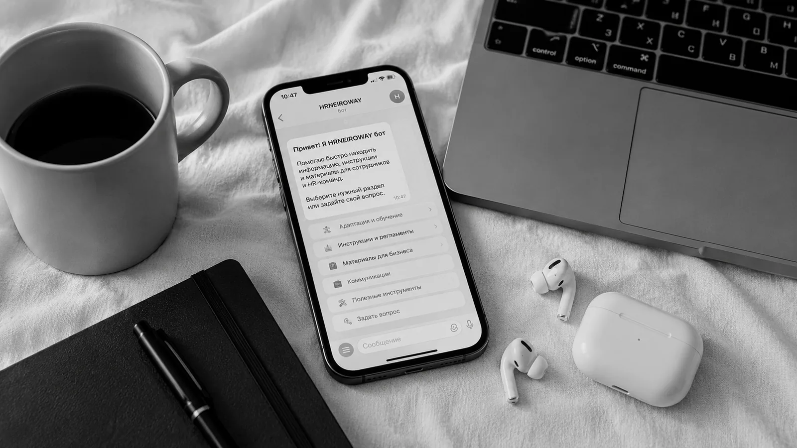
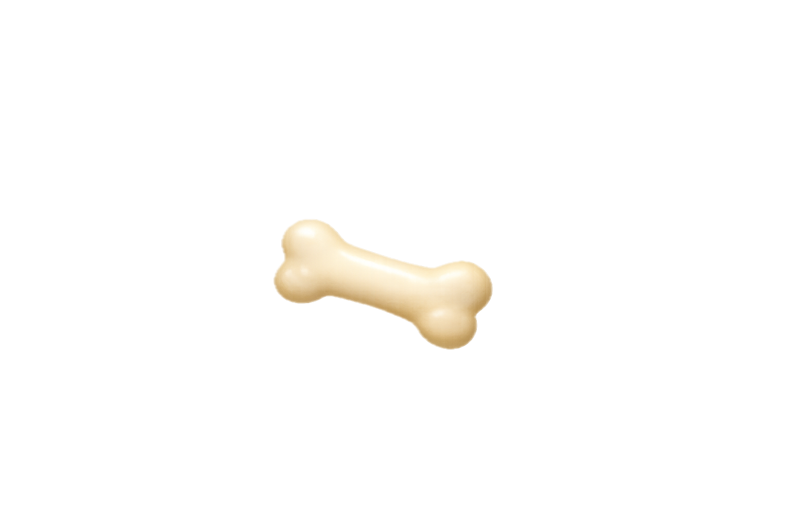

01Марина Голяева
15+ лет в HR

Материалы для бизнеса
которыми удобно пользоваться
Делаю сложное — понятным
Обсудить проектМатериалы есть, но ими никто не пользуется
- Сотрудники задают одни и те же вопросы
- Инструкции никто не открывает
- Презентации перегружены текстом
- Новички долго разбираются в работе
- Важная информация теряется в чатах
- Клиенты не понимают ваши услуги
- Процессы есть, но ими неудобно пользоваться
- Материалы выглядят несистемно
Я помогаю превращать хаос в понятную систему
Информация должна работать
Я делаю так, чтобы она приносила пользу вашему бизнесу
[03]
Услуги
Я могу для вас сделать
Материалы
Подробнее
02Внутренние
коммуникации
Что входит
Адаптация
и обучение
Посмотреть
Сайты
на Tilda
Смотреть примеры

05Автоматизация
ВозможностиНейрофотосессия
О формате
[04]
Подход
В чем моя ценность для вас?
Я соединяю HR-экспертизу, структуру, текст и визуальную подачу в одном проекте
Вам не нужно отдельно искать HR-специалиста, копирайтера, дизайнера и человека, который соберет всё в понятный формат. Я понимаю, что должно быть внутри материала, как это объяснить сотрудникам и как подать так, чтобы этим действительно пользовались.
Нажмите на карточку
[05]
Бесплатная HR-диагностика
Найдите слабое место в адаптации сотрудников за 2 минуты
Ответьте на 8 вопросов и получите оценку системы адаптации: баллы, риски и рекомендации по улучшению внутренних материалов.
- Покажет, где сотрудники теряют время
- Выявит повторяющиеся вопросы и пробелы в инструкциях
- Подскажет, что поможет: welcome book, база знаний или HR-гайды
HRNEIROWAY
Диагностика адаптации
Вопрос 01 / 08
Есть ли у нового сотрудника понятный маршрут первых недель?
Оцените не намерение, а реальный опыт: знает ли человек, что делать, где искать информацию и к кому обращаться.
Прогресс
1 из 8
Выберите вариант — страница перелистнётся дальше
Оценка системы
0/100
Системе нужна опора
Сотрудники тратят время на поиск ответов
Что создаёт риск
Что поможет первым
[06]
Полезное
[ Здесь кое-что полезное и приятное для вас ]
Нажмите на любое письмо и получите материал
Заберите то, что пригодится именно сейчас
[07]
Процесс
Как проходит работа
Пять последовательных этапов — от первого сообщения до материала, которым можно пользоваться.
Каспер покажет путь

Вы присылаете задачу
Кратко описываете задачу: гайд, инструкция или сайт,
презентация, регламент или другой материал.
Разбираю цель и аудиторию
Уточняю аудиторию, контекст использования
и результат, который нужен.
Собираю структуру
Раскладываю информацию по блокам,
убираю лишнее и выстраиваю логику.
Оформляю визуал
Подбираю стиль, шрифты, карточки и акценты,
затем собираю аккуратный макет.
Передаю готовый материал
Передаю результат, который можно использовать,
показывать, отправлять или дорабатывать.
01 / 04[ОБО МНЕ]
Я пришла к тому, чем занимаюсь сейчас, не за один день
Уже больше 16 лет я работаю в HR. И большую часть этого времени рядом со мной были кадровые документы, таблицы, регламенты и большой объём информации.
02 / 04[ПРАКТИКА]
Мне всегда нравились задачи, где можно было что-то придумать
Написать понятный текст для сотрудников, собрать презентацию, оформить инструкцию, придумать внутренний проект или найти способ рассказать о важном так, чтобы это действительно захотелось прочитать.
03 / 04[ВИЗУАЛЬНОЕ]
Интерес к визуальному был со мной всегда
Для близких и друзей я делала видеоролики, памятные альбомы, газеты и другие истории, к которым можно возвращаться спустя годы. Осваивала графические программы, пробовала новые инструменты и училась в процессе.
Мне нравилось не только создавать, но и видеть эмоции людей, для которых я это делала.
04 / 04[СЕЙЧАС]
Так появился HRNEIROWAY
Когда появились AI и новые digital-инструменты, для меня словно соединились части одного пазла.
Теперь я объединяю то, что знаю о людях и процессах из HR, с тем, что всегда любила: тексты, визуальную подачу, технологии и создание нового.
Всё, что я делаю сейчас, выросло из одного простого желания — чтобы человеку по другую сторону инструкции, сайта или сообщения было легче понять, что происходит и что делать дальше.